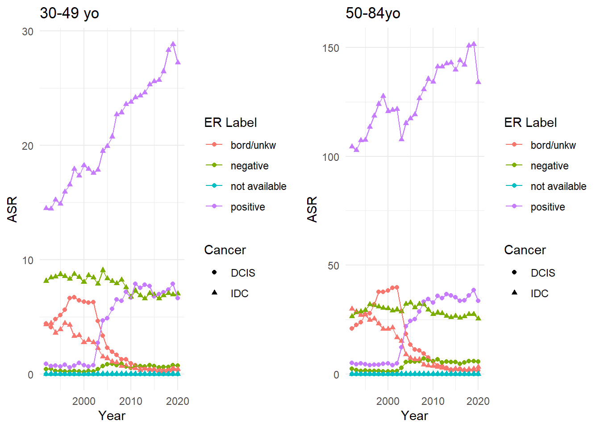
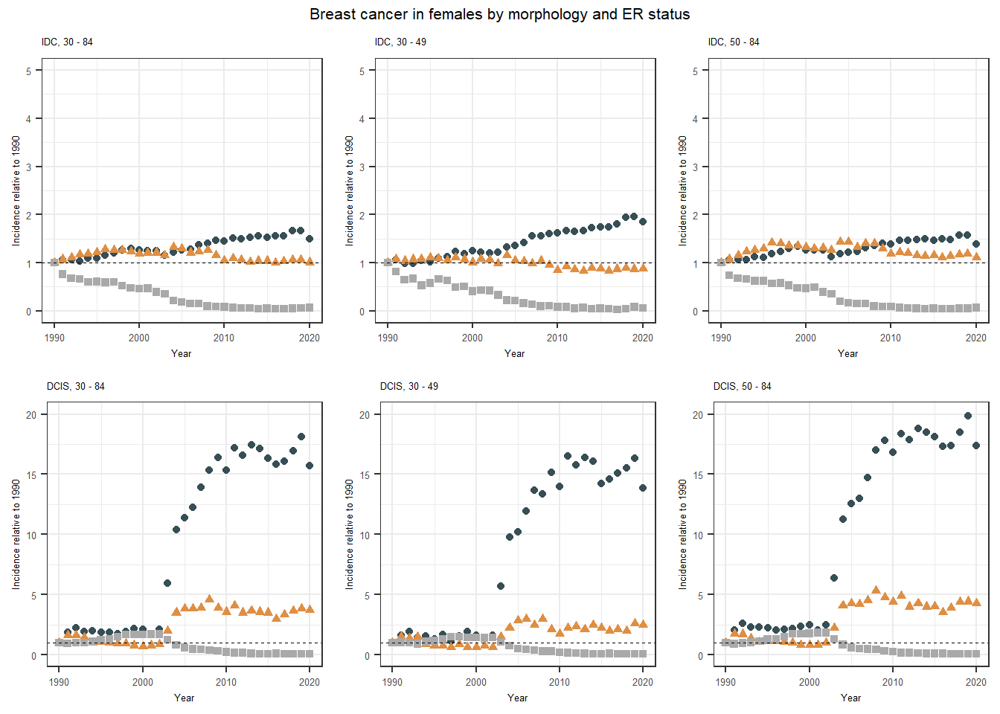

df1 <- read.csv("https://raw.githubusercontent.com/filhoalm/Breast_cancer/main/dataCheck/dcis.csv")
names(df1) <- c("year", "age", "er", "asr", "count", "py", "std")
df1$cancer <- "DCIS"
df2 <- read.csv("https://raw.githubusercontent.com/filhoalm/Breast_cancer/main/dataCheck/idc.csv")
names(df2) <- c("year", "age", "er", "asr", "count", "py", "std")
df2$cancer <- "IDC"SEER - Breast cancer: invasive vs in situ
Data source
Institute NC. Surveillance, Epidemiology, and End Results (SEER 8, and 13,) Program Populations (1975-2020). (www.seer.cancer.gov/popdata), National Cancer Institute, DCCPS, Surveillance Research Program, released May 2023. February 2022S ed.: National Cancer Institute, 2022.
Datasets available
SEER8
SEER8 Research plus - IDC and DCIS by, age, year, ER status, from 1979 to 2020: DCIS:https://raw.githubusercontent.com/filhoalm/Breast_cancer/main/dataCheck/dcis.csv” IDC: https://raw.githubusercontent.com/filhoalm/Breast_cancer/main/dataCheck/idc.csv
SEER13
SEER13 Research plus - Malignant breast cancer by race and ethnicity, year, age, ER status, HER status from 1992 to 2018: https://github.com/filhoalm/Breast_cancer/blob/main/forecasting/data/breast_er_her_11072023.csv
SEER13 Research plus - Malignant breast cancer by year, age, ER status, HER status, PR status from 1992 to 2018: https://github.com/filhoalm/Breast_cancer/blob/main/forecasting/data/breast_er_her_pr_1182023.csv
Morphology
DCIS
‘8201/2: Cribriform carcinoma in situ’,‘8500/2: Intraductal carcinoma, noninfiltrating, NOS’,‘8501/2: Comedocarcinoma, noninfiltrating’,‘8503/2: Noninfiltrating intraductal papillary adenocarcinoma’,‘8507/2: Intraductal micropapillary carcinoma’,‘8523/2: Intraductal with other types of carcinoma in situ’ AND {Extent of Disease.ER Status Recode Breast Cancer (1990+)} = ‘Positive’,‘Negative’,‘Borderline/Unknown’,‘Recode not available’
IDC
‘8500/3: Infiltrating duct carcinoma, NOS’,‘8523/3: Infiltrating duct mixed with other types of carcinoma’ AND {Extent of Disease.ER Status Recode Breast Cancer (1990+)} = ‘Positive’,‘Negative’,‘Borderline/Unknown’,‘Recode not available’
Temporal trends of female breast cancer by subtype and ER status, using SEER8, 1979 - 2020.
# Define a function to perform repetitive operations
prepare_data <- function(df1, df2, age_index_range, start_year) {
df <- bind_rows(df1, df2) %>%
mutate(year = year + 1974,
er_label = case_when(
er == 0 ~ "positive",
er == 1 ~ "negative",
er == 2 ~ "bord/unkw",
TRUE ~ "not available"
),
age_group = cut(age, breaks = seq(29, 85, 5), labels = paste(seq(30, 80, 5), "-", seq(34, 84, 5))),
age_index = as.integer(age_group) + 6) %>%
filter(age >= 30 & age <= 84 & year >= 1975, age_index %in% age_index_range)
df_selected <- select(df, c(1, 5, 6, 8, 9, 11))
result <- csu_asr(df_selected, "age_index", "count", "py",
group_by = c("cancer", "er_label", "year"),
var_age_group = c("er_label", "year"))
subset(result, year >= start_year)
}
# Compute ASR for each age group
df6 <- prepare_data(df1, df2, 7:10, 1992) # 30-49 yo
Population with less than 18 age group:
er_label year nb_age_group
bord/unkw 1975 4
bord/unkw 1976 4
bord/unkw 1977 4
bord/unkw 1978 4
bord/unkw 1979 4
---
positive 2016 4
positive 2017 4
positive 2018 4
positive 2019 4
positive 2020 4
ASR have been computed for the age group 0-99+df7 <- prepare_data(df1, df2, 11:17, 1992) # 50-84 yo
Population with less than 18 age group:
er_label year nb_age_group
bord/unkw 1975 7
bord/unkw 1976 7
bord/unkw 1977 7
bord/unkw 1978 7
bord/unkw 1979 7
---
positive 2016 7
positive 2017 7
positive 2018 7
positive 2019 7
positive 2020 7
ASR have been computed for the age group 0-99+# # Define a function to create the plot
create_asr_plot <- function(df) {
ggplot(df, aes(x = year, y = asr, color = er_label, shape = cancer)) +
geom_point() +
geom_line() +
labs(x = "Year", y = "ASR", color = "ER Label", shape = "Cancer") +
theme_minimal()
}# Create the plots
plot2 <- create_asr_plot(df6) + labs(title = "30-49 yo") # ASR for the age group 30-49
plot3 <- create_asr_plot(df7) + labs(title = "50-84yo") # ASR for the age group 50-84+
# Then use grid.arrange to put them side by side
grid.arrange(plot2, plot3, ncol = 2)
Is Ductal Carcinoma in Situ a Precursor or Low-Risk Variant of Invasive Breast Cancer? A Population Perspective
library(ggplot2)
library(gridExtra)
library(dplyr)
#MyPath <- "C:/Users/filhoam/Desktop/Breast/Round2/Figure/"
# Function for reading and processing data
process_df <- function(file_path, index) {
df = read.csv(file_path)
df$year <- df$Year.of.diagnosis + 1974
names(df) <- c("year_num", "er", "asr", "cases", "py", "year")
df$er_label <- factor(df$er, labels = c("ER+", "ER-", "Borderline/Unk", "Not available"))
refs <- df$asr[df$year == 1990]
df <- df %>%
group_by(er) %>%
mutate(rr = round((asr/refs[er + 1]), 2)) %>%
ungroup()
df$index <- index
df$site <- "DCIS"
return(df)
}
# File paths
file_paths <- c('file_path1' = 'https://raw.githubusercontent.com/filhoalm/EpicanVerse/main/dcis_er_30_49.csv',
'file_path2' = 'https://raw.githubusercontent.com/filhoalm/EpicanVerse/main/dcis_er_50_84.csv',
'file_path3' = 'https://raw.githubusercontent.com/filhoalm/EpicanVerse/main/dcis_er.csv'
)
# Indices
indices <- c('30_49', '50_84', '30_84')
# Process dataframes
dfs <- mapply(process_df, file_path = file_paths, index = indices, SIMPLIFY = F)
# Combine dataframes
dcis <- do.call(rbind, dfs)
# IDC
# Function for reading and processing data
process_df <- function(file_path, index) {
df = read.csv(file_path)
df$year <- df$Year.of.diagnosis + 1974
names(df) <- c("year_num", "er", "asr", "cases", "py", "year")
df$er_label <- factor(df$er, labels = c("ER+", "ER-", "Borderline/Unk", "Not available"))
refs <- df$asr[df$year == 1990]
df <- df %>%
group_by(er) %>%
mutate(rr = round((asr/refs[er + 1]), 2)) %>%
ungroup()
df$index <- index
df$site <- "IDC"
return(df)
}
# File paths
file_paths <- c('file_path1' = 'https://raw.githubusercontent.com/filhoalm/EpicanVerse/main/idc_er_30_49.csv',
'file_path2' = 'https://raw.githubusercontent.com/filhoalm/EpicanVerse/main/idc_er_50_84.csv',
'file_path3' = 'https://raw.githubusercontent.com/filhoalm/EpicanVerse/main/idc_er.csv'
)
# Indices
indices <- c('30_49', '50_84', '30_84')
# Process dataframes
dfs <- mapply(process_df, file_path = file_paths, index = indices, SIMPLIFY = F)
# Combine dataframes
idc <- do.call(rbind, dfs)
data <- rbind(dcis, idc)
generate_plot <- function(data, title, ylim_val) {
title = paste0(title)
plot <- ggplot(data, aes(x=year, y= rr, group=er_label)) +
geom_point(aes(shape=er_label, color=er_label)) +
scale_color_manual(values=c('#374e55','#df8f44','darkgray'))+
ylim (0, ylim_val) +
labs(x="Year", y="Incidence relative to 1990") +
geom_hline(yintercept=1, linetype="dashed", size=0.3) +
theme_bw() +
theme(legend.position="none") +
ggtitle(title)+
theme(plot.title = element_text(size = 5),
axis.text.x = element_text(size = 5),
axis.text.y = element_text(size = 5),
axis.title.x = element_text(size = 5),
axis.title.y = element_text(size = 5))
return(plot)
}
# Define the subset of your data for each index
indices <- list("30_84", "30_49", "50_84")
#
a <- subset(data, data$site=="IDC" & data$index=="30_84" &data$er_label!="Not available" & data$year >= 1990)
b <- subset(data, data$site=="IDC" & data$index=="30_49" &data$er_label!="Not available" & data$year >= 1990)
c <- subset(data, data$site=="IDC" & data$index=="50_84" &data$er_label!="Not available" & data$year >= 1990)
a1 <- subset(data, data$site=="DCIS" & data$index=="30_84" &data$er_label!="Not available" & data$year >= 1990)
b1 <- subset(data, data$site=="DCIS" & data$index=="30_49" &data$er_label!="Not available" & data$year >= 1990)
c1 <- subset(data, data$site=="DCIS" & data$index=="50_84" &data$er_label!="Not available" & data$year >= 1990)
plot30_84 <- generate_plot(a, '30 - 84', 5) +
ggtitle(paste0('IDC, ', gsub('_', ' - ', '30 - 84')))Warning: Using `size` aesthetic for lines was deprecated in ggplot2 3.4.0.
ℹ Please use `linewidth` instead.assign(paste0('plot', '30 - 84'), plot)
plot30_49 <- generate_plot(b, '30 - 49', 5) +
ggtitle(paste0('IDC, ', gsub('_', ' - ', '30 - 49')))
assign(paste0('plot', '30 - 49'), plot)
plot50_84 <- generate_plot(c, '50 - 84', 5) +
ggtitle(paste0('IDC, ', gsub('_', ' - ', '50 - 84')))
assign(paste0('plot', '50 - 84'), plot)
#
plotA30_84 <- generate_plot(a1, '30 - 84', 20) +
ggtitle(paste0('DCIS, ', gsub('_', ' - ', '30 - 84')))
assign(paste0('plot', '30 - 84'), plot)
plotA30_49 <- generate_plot(b1, '30 - 49', 20) +
ggtitle(paste0('DCIS, ', gsub('_', ' - ', '30 - 49')))
assign(paste0('plot', '30 - 49'), plot)
plotA50_84 <- generate_plot(c1, '50 - 84', 20) +
ggtitle(paste0('DCIS, ', gsub('_', ' - ', '50 - 84')))
assign(paste0('plot', '50 - 84'), plot)
grid.arrange(plot30_84, plot30_49, plot50_84,
plotA30_84, plotA30_49, plotA50_84, ncol=3, nrow=2, top = grid::textGrob('Breast cancer in females by morphology and ER status', gp=grid::gpar(fontsize=8)))
Figure 1 shows the trends in the incidence of Infiltrating Ductal Cancer (IDC) and Ductal Carcinoma In Situ (DCIS) breast cancers relative to 1980. A) depicts overall trends; B) depicts trends in younger women; and C) depicts trends in older women. The dashed line corresponds to a value of 1.